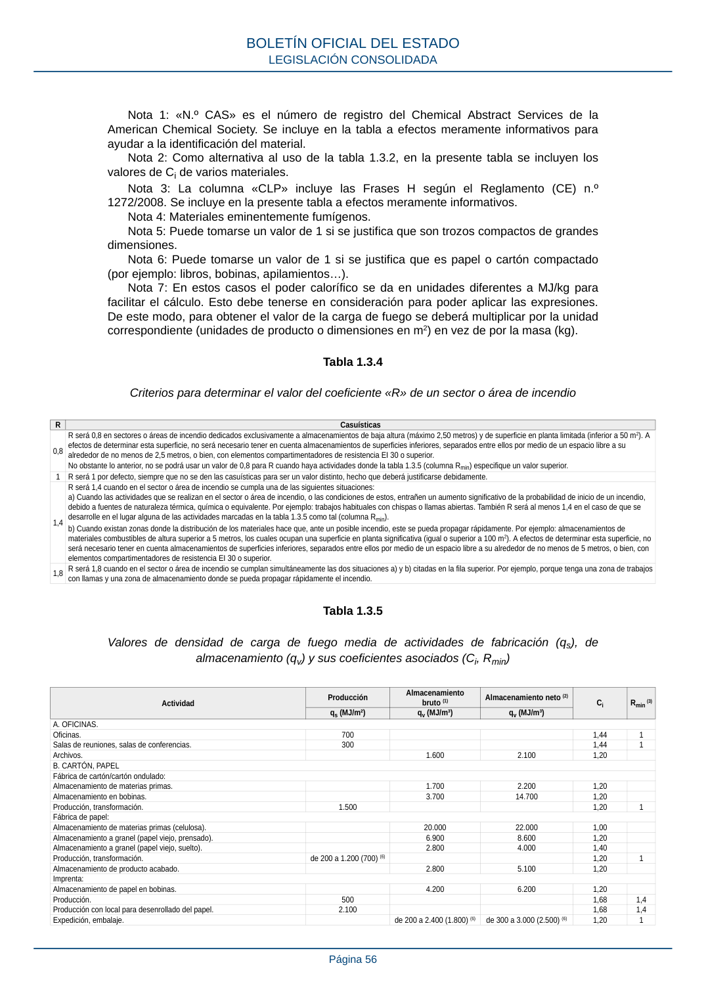

RSCIEI · Nota 6: Puede tomarse un valor de 1 si se justifica que es papel o cartón compactado (por ejemplo: libros, bobinas, apilamientos…). · versión 2025-04-10 · capa asociada
Formatos: JSON compacto · Markdown · PDF fuente
Ámbito del documento · texto del ámbito · documento y tablas
ID técnico a0122 · PDF pág. 56 · jerarquía no validada por persona · contrastado con el literal de la página 56 (candidato tipográfico); no validado por persona · padre: raíz
Nota 6: Puede tomarse un valor de 1 si se justifica que es papel o cartón compactado (por ejemplo: libros, bobinas, apilamientos…). (por ejemplo: libros, bobinas, apilamientos…).

PDF fuente redistribuible: copia fiel enlazada en esta página (SHA256 verificado).